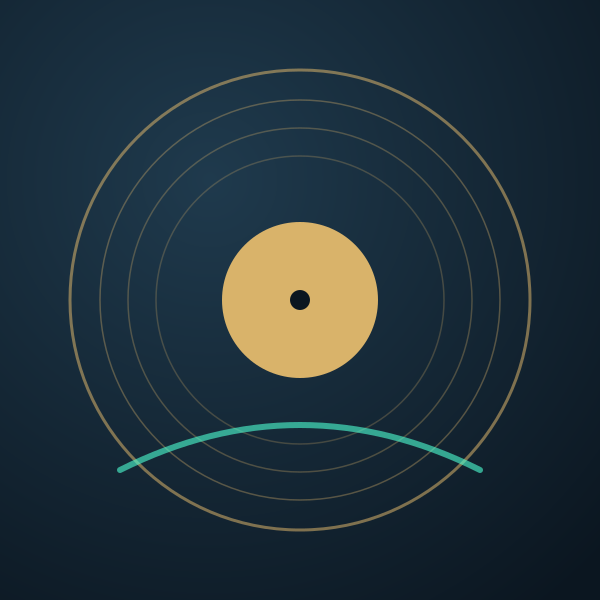
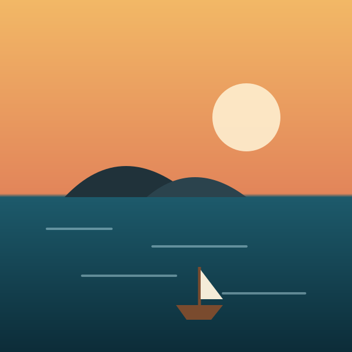

<!doctype html>
<html lang="de">
<head>
<meta charset="utf-8">
<meta name="viewport" content="width=device-width, initial-scale=1">
<title>Entwurf - Übersicht</title>
<link rel="stylesheet" href="../frontend/node_modules/@fortawesome/fontawesome-free/css/all.min.css">
<link rel="stylesheet" href="stil.css">
<link rel="stylesheet" href="sammlung.css">
<style>
  /* Kopf: Kennzahlen, Dienste, Laden in einer Zeile */
  .ueber-kopf { display: flex; align-items: baseline; gap: var(--tv-a4); flex-wrap: wrap; }
  .ueber-kopf h1 { margin: 0; font-size: var(--tv-gr-seite); }
  .dienste { display: inline-flex; gap: var(--tv-a2); margin-left: auto; }
  .dienst { display: inline-flex; align-items: center; gap: 6px; height: 32px; padding: 0 10px; border-radius: var(--tv-ecke);
            background: var(--tv-karte); color: var(--tv-text-2); font-size: var(--tv-gr-klein); }
  .led { width: 9px; height: 9px; border-radius: 50%; background: var(--tv-erfolg); }
  .led.aus { background: var(--tv-text-3); opacity: 0.5; }
  .laden { display: grid; grid-template-columns: minmax(0, 1fr) auto auto auto; gap: var(--tv-a2); margin-top: var(--tv-a3); }
  .laden .knopf { grid-area: auto; }   /* .haupt ist auch der Seitenbereich */
  .laden .feld { display: flex; align-items: center; gap: var(--tv-a2); height: 44px; padding: 0 var(--tv-a3); border-radius: var(--tv-ecke);
                 background: var(--tv-mulde); color: var(--tv-text-3); }
  .wahl-knopf { display: inline-flex; align-items: center; gap: 8px; height: 44px; padding: 0 var(--tv-a3); border-radius: var(--tv-ecke);
                background: var(--tv-karte-2); color: var(--tv-text); font-weight: 600; }

  /* Abschnitte links */
  .abschnitt { margin-bottom: var(--tv-a5); }
  .abschnitt-kopf { display: flex; align-items: baseline; gap: var(--tv-a3); margin-bottom: var(--tv-a3); }
  .abschnitt-kopf h2 { margin: 0; font-size: 20px; }
  .abschnitt-kopf .mehr { margin-left: auto; color: var(--tv-akzent); font-weight: 600; font-size: var(--tv-gr-klein); }
  .reihe { display: grid; grid-template-columns: repeat(3, minmax(0, 1fr)); gap: var(--tv-a4); }
  .karte-v .bild { position: relative; aspect-ratio: 16 / 9; border-radius: var(--tv-ecke); overflow: hidden; background: var(--tv-mulde); }
  .karte-v img { width: 100%; height: 100%; object-fit: cover; display: block; }
  .karte-v .d { position: absolute; right: 6px; bottom: 8px; padding: 1px 6px; border-radius: var(--tv-ecke-klein); background: rgba(0, 0, 0, 0.75);
                font-size: 13px; font-family: var(--tv-schrift-zahl); }
  .karte-v .stand { position: absolute; left: 0; right: 0; bottom: 0; height: 4px; background: rgba(255, 255, 255, 0.2); }
  .karte-v .stand b { position: absolute; left: 0; top: 0; bottom: 0; background: var(--tv-akzent); }
  .karte-v .weiter { position: absolute; inset: 0; display: grid; place-items: center; opacity: 0; }
  .karte-v .t { margin-top: 8px; font-weight: 600; line-height: 1.3; display: -webkit-box; -webkit-line-clamp: 2; -webkit-box-orient: vertical; overflow: hidden; }
  .karte-v .w { font-size: var(--tv-gr-klein); color: var(--tv-text-2); display: flex; gap: 6px; align-items: center; }
  .sprache { display: inline-flex; align-items: center; gap: 3px; height: 20px; padding: 0 5px; border-radius: var(--tv-ecke-klein);
             background: var(--tv-karte-3); font-size: 13px; color: var(--tv-text-2); }
  .sprache .zahl { font-weight: 700; }

  .hoeren { display: grid; grid-template-columns: repeat(2, minmax(0, 1fr)); gap: var(--tv-a3); }
  .hoer { display: grid; grid-template-columns: 64px minmax(0, 1fr) 44px; gap: var(--tv-a3); align-items: center; padding: var(--tv-a3);
          border-radius: var(--tv-ecke); background: var(--tv-karte); }
  .hoer img { width: 64px; height: 64px; object-fit: cover; border-radius: var(--tv-ecke-klein); }
  .hoer .art { font-size: 13px; font-weight: 700; letter-spacing: 0.08em; text-transform: uppercase; }
  .hoer .art.musik { color: var(--tv-art-musik); }
  .hoer .art.buch { color: var(--tv-art-vertont); }
  .hoer .t { font-weight: 700; white-space: nowrap; overflow: hidden; text-overflow: ellipsis; }
  .hoer .w { font-size: var(--tv-gr-klein); color: var(--tv-text-2); }
  .hoer .balken { height: 4px; margin-top: 6px; }
  .spiel { width: 44px; height: 44px; border: 0; border-radius: var(--tv-ecke); background: var(--tv-akzent); color: var(--tv-akzent-text); font-size: 16px; }

  /* Rechte Spalte */
  .karte { background: var(--tv-karte); border-radius: var(--tv-ecke); padding: var(--tv-a4); margin-bottom: var(--tv-a3); }
  .karte h3 { display: flex; align-items: baseline; margin: 0 0 var(--tv-a3); font-size: var(--tv-gr-marke); letter-spacing: 0.1em; text-transform: uppercase; color: var(--tv-text-3); }
  .karte h3 a { margin-left: auto; letter-spacing: 0; text-transform: none; color: var(--tv-akzent); font-size: var(--tv-gr-klein); font-weight: 600; }
  .platte { margin-bottom: var(--tv-a3); }
  .platte .oben { display: flex; justify-content: space-between; font-size: var(--tv-gr-klein); }
  .platte .balken { height: 8px; margin-top: 6px; }
  .zeile-k { display: grid; grid-template-columns: minmax(0, 1fr) auto; gap: var(--tv-a2); align-items: center; padding: 6px 0; }
  .zeile-k .n { font-weight: 600; }
  .zeile-k .w { font-size: var(--tv-gr-klein); color: var(--tv-text-3); }
  .zeile-k button { height: 32px; padding: 0 10px; border: 0; border-radius: var(--tv-ecke); background: var(--tv-karte-3); color: var(--tv-text); font: inherit; font-size: var(--tv-gr-klein); font-weight: 600; }
  .zeile-k button.an { background: var(--tv-akzent); color: var(--tv-akzent-text); }
  .sprachbalken { display: flex; height: 12px; border-radius: var(--tv-ecke-klein); overflow: hidden; margin-bottom: var(--tv-a3); }
  .sprachbalken span:nth-child(1) { background: var(--tv-akzent); }
  .sprachbalken span:nth-child(2) { background: var(--tv-info); }
  .sprachbalken span:nth-child(3) { background: var(--tv-warnung); }
  .sprachbalken span:nth-child(4) { background: var(--tv-text-3); }
  .chips { display: flex; flex-wrap: wrap; gap: 6px; }
  .chip-s { display: inline-flex; align-items: center; gap: 5px; height: 30px; padding: 0 9px; border-radius: var(--tv-ecke); background: var(--tv-karte-2);
            font-size: var(--tv-gr-klein); color: var(--tv-text); }
  .chip-s .zahl { color: var(--tv-text-3); }
  .geraet { display: grid; grid-template-columns: 26px minmax(0, 1fr); gap: var(--tv-a2); align-items: center; padding: 5px 0; }
  .geraet i { color: var(--tv-text-2); text-align: center; }
  .geraet .w { font-size: var(--tv-gr-klein); color: var(--tv-text-3); white-space: nowrap; overflow: hidden; text-overflow: ellipsis; }
  .erste { display: grid; grid-template-columns: repeat(3, minmax(0, 1fr)); gap: var(--tv-a3); }
  .erste .karte { margin: 0; }
  .erste .nr { width: 32px; height: 32px; display: grid; place-items: center; border-radius: 50%; background: rgba(var(--tv-akzent-rgb), 0.14);
               color: var(--tv-akzent); font-weight: 700; margin-bottom: var(--tv-a2); }
</style>
</head>
<body>
<div class="schale">
  <div data-block="kopf"></div>
  <div data-block="seite"></div>
  <main class="haupt rahmen" id="haupt" style="position: relative"></main>
  <div data-block="fuss"></div>
</div>

<script type="module">
  import { seite, vorschau as bild, dauer } from './gemeinsam.js';
  import { zustaende } from './sammlung.js';
  seite('start');
  const haupt = document.getElementById('haupt');

  // Echte Daten vom Pi (15.10.2026)
  const WEITER = [
    ['8-u23g2CkQM', 't.A.T.u. - 220 (Official Music Video) 4K', 'tatu', 195, 68],
    ['HwZtU0gn6ZU', 'TECHNO MIX 2026 Peak Time Techno Bangers 08', 'Electro Junkiee', 3712, 94],
    ['Bn4D6tnjqKY', "Can AI robots turn the tide for Ukraine against Russia's $12B drone threat?", 'The Sun', 902, 16, 'en'],
    ['rHh4JyIvHJ0', 'Mind Games mit Maya: Was merkt sie sich?', 'ZDF MAGAZIN ROYALE', 694, 194],
    ['7fqg9-SIWfU', 'OVERWERK - The Nth [Piano] - INDEX : 01/14', 'OVERWERK', 1031, 63],
    ['JhW0XB87K6w', 'Arp-11', 'basscadet', 190, 19],
  ];
  const NEU_ABOS = [
    ['rqKgGwqLotE', 'Pink Floyd - Echoes (from Crystal Voyager)', 'Pink Floyd', 1388, 'en'],
    ['UTAf8AA_cy0', 'Raise Your Voices (The Orchestral Music Of Secret Garden)', 'Secret Garden - Official', 3611, 'en'],
    ['YrDP1sknI4o', 'Miklei B2B Spacer | HÖR @ Grape Festival 2026', 'HÖR BERLIN', 3657],
  ];
  const GELADEN = [
    ['10x2JJoN2ig', 'Einstieg in OpenTelemetry - Monitoring next Level', 'Gregor Biswanger', 12055],
    ['l6q97s6NQsI', 'Iran im Ausnahmezustand: Die junge Generation gegen das Mullah-Regime', 'Weltspiegel', 239],
    ['5g74rFPKkUk', 'Programming and Tech News | 2023-01-09 | A View from the Garden', 'Coding Garden', 1164, 'en'],
  ];

  const label = (code) => code === 'en' ? `<span class="sprache" title="Englisch">🇬🇧 <span class="zahl">EN</span></span>` : '';
  const karte = ([id, titel, kanal, d, stand, sprache]) => `
    <div class="karte-v"><div class="bild"><span class="d">${dauer(d)}</span>
      ${stand !== undefined && typeof stand === 'number' ? `<span class="stand"><b style="width:${Math.round(stand / d * 100)}%"></b></span>` : ''}</div>
      <div class="t">${titel}</div><div class="w">${kanal} ${label(typeof stand === 'string' ? stand : sprache)}</div></div>`;

  const KOPF = `
    <div class="rahmen-kopf">
      <div class="ueber-kopf">
        <h1>Übersicht</h1>
        <span class="zahl leise">532 in der Bibliothek · 29.358 im Archiv · 611 Abos</span>
        <span class="dienste">
          <span class="dienst" title="Abrufe bei der Quelle laufen normal."><span class="led"></span> Quelle</span>
          <span class="dienst" title="Kanäle werden regelmäßig auf neue Videos geprüft."><span class="led"></span> Kanalprüfung</span>
          <span class="dienst" title="Der Dienst für Mag-ich-Zahlen ist erreichbar."><span class="led"></span> Bewertungen</span>
        </span>
      </div>
      <div class="laden">
        <div class="feld"><i class="fa-solid fa-link"></i> Adresse eines Videos, einer Playlist oder eines Kanals einfügen</div>
        <span class="wahl-knopf">720p <i class="fa-solid fa-chevron-down"></i></span>
        <span class="wahl-knopf"><i class="fa-solid fa-music"></i> Nur Ton</span>
        <button class="knopf haupt" style="height:44px"><i class="fa-solid fa-download"></i> Laden</button>
      </div>
    </div>`;

  const LINKS = `
    <div class="abschnitt"><div class="abschnitt-kopf"><h2>Weiterschauen</h2><span class="zahl leise">6</span><a class="mehr">Verlauf</a></div>
      <div class="reihe">${WEITER.map(karte).join('')}</div></div>
    <div class="abschnitt"><div class="abschnitt-kopf"><h2>Weiterhören</h2></div>
      <div class="hoeren">
        <div class="hoer"><div style="min-width:0"><div class="art musik"><i class="fa-solid fa-music"></i> Musik</div>
          <div class="t">All The Things She Said</div><div class="w">t.A.T.u. · noch 37 Titel in der Warteschlange</div></div><button class="spiel"><i class="fa-solid fa-play"></i></button></div>
        <div class="hoer"><div style="min-width:0"><div class="art buch"><i class="fa-solid fa-book-open"></i> Hörbuch</div>
          <div class="t">Morels Erfindung (WDR 1995)</div><div class="w">Adolfo Bioy Casares · <span class="zahl">58 Min.</span></div>
          <div class="balken"><b style="width:0%"></b></div></div><button class="spiel"><i class="fa-solid fa-play"></i></button></div>
      </div></div>
    <div class="abschnitt"><div class="abschnitt-kopf"><h2>Neu bei Abos</h2><span class="zahl leise">273</span><a class="mehr">Zum Feed</a></div>
      <div class="reihe">${NEU_ABOS.map(karte).join('')}</div></div>
    <div class="abschnitt"><div class="abschnitt-kopf"><h2>Zuletzt geladen</h2><a class="mehr">Zur Bibliothek</a></div>
      <div class="reihe">${GELADEN.map(karte).join('')}</div></div>`;

  const RECHTS = `
    <div class="karte"><h3>Speicher</h3>
      <div class="platte"><div class="oben"><span>Medien</span><span class="zahl">8,4 TB von 23,6 TB</span></div><div class="balken"><b style="width:35.7%"></b></div></div>
      <div class="platte"><div class="oben"><span>System und Index</span><span class="zahl">228 GB von 1,8 TB</span></div><div class="balken"><b style="width:12.5%"></b></div></div>
      <div class="leise klein">Bibliothek <span class="zahl">104,4 GB</span> · Datenbank <span class="zahl">1,2 GB</span></div>
    </div>
    <div class="karte"><h3>Downloads <a>Öffnen</a></h3>
      <div class="zeile-k"><div><div class="n">Läuft: Einstieg in OpenTelemetry</div><div class="w">Gregor Biswanger · <span class="zahl">62 %</span></div></div></div>
      <div class="balken" style="height:6px"><b style="width:62%"></b></div>
      <div class="leise klein" style="margin-top:8px"><span class="zahl">100</span> warten</div>
    </div>
    <div class="karte"><h3>Hintergrundarbeiten</h3>
      <div class="zeile-k"><div><div class="n">KI-Transkripte</div><div class="w"><span class="zahl">1.208 von 31.162</span> · angehalten</div></div><button class="an"><i class="fa-solid fa-play"></i> Fortsetzen</button></div>
      <div class="zeile-k"><div><div class="n">Kanalscan</div><div class="w"><span class="zahl">175 von 610</span> · angehalten</div></div><button class="an"><i class="fa-solid fa-play"></i> Fortsetzen</button></div>
      <div class="zeile-k"><div><div class="n">Video-Typen prüfen</div><div class="w"><span class="zahl">0 von 34.243</span> · angehalten</div></div><button class="an"><i class="fa-solid fa-play"></i> Fortsetzen</button></div>
      <div class="zeile-k"><div><div class="n">Vertonen</div><div class="w">angehalten</div></div><button class="an"><i class="fa-solid fa-play"></i> Fortsetzen</button></div>
    </div>
    <div class="karte"><h3>Sprachen <a>In der Bibliothek</a></h3>
      <div class="sprachbalken"><span style="flex:23972"></span><span style="flex:5363"></span><span style="flex:210"></span><span style="flex:344"></span></div>
      <div class="chips">
        <span class="chip-s">🇩🇪 Deutsch <span class="zahl">23.972</span></span>
        <span class="chip-s">🇬🇧 Englisch <span class="zahl">5.363</span></span>
        <span class="chip-s">🇫🇷 Französisch <span class="zahl">66</span></span>
        <span class="chip-s">🇮🇹 Italienisch <span class="zahl">60</span></span>
        <span class="chip-s">weitere <span class="zahl">84</span></span>
        <span class="chip-s">unbekannt <span class="zahl">344</span></span>
      </div>
    </div>
    <div class="karte"><h3>Geräte</h3>
      <div class="geraet"><i class="fa-solid fa-mobile-screen"></i><div><div>Handy</div><div class="w">pausiert: All The Things She Said</div></div></div>
      <div class="geraet"><i class="fa-solid fa-display"></i><div><div>Rechner <span class="leise">(dieses Gerät)</span></div><div class="w">pausiert: Doblexxó</div></div></div>
    </div>`;

  const LEER = `
    <div class="abschnitt"><div class="abschnitt-kopf"><h2>Erste Schritte</h2></div>
      <div class="erste">
        <div class="karte"><div class="nr">1</div><b>Kanäle abonnieren</b><div class="leise klein">Neue Videos erscheinen im Feed; laden nur, was du willst.</div></div>
        <div class="karte"><div class="nr">2</div><b>Ein Video laden</b><div class="leise klein">Adresse oben einfügen, Qualität wählen, Laden.</div></div>
        <div class="karte"><div class="nr">3</div><b>Musik einbinden</b><div class="leise klein">Eigene Sammlung lesend einhängen, sie erscheint in der Musik.</div></div>
      </div></div>`;

  zustaende([['normal', 'Normal'], ['leer', 'Frisch eingerichtet']], (z) => {
    const leer = z === 'leer';
    const kopf = leer ? KOPF.replace('532 in der Bibliothek · 29.358 im Archiv · 611 Abos', 'Noch leer') : KOPF;
    const rechts = leer
      ? RECHTS.split('<div class="karte"><h3>Downloads')[0] + `<div class="karte"><h3>Downloads</h3><div class="leise klein">Noch nichts geladen.</div></div>`
      : RECHTS;
    haupt.innerHTML = kopf + `<div class="spalten"><div class="rollfeld">${leer ? LEER : LINKS}</div><div class="rollfeld">${rechts}</div></div>`;
  });
</script>
</body>
</html>
